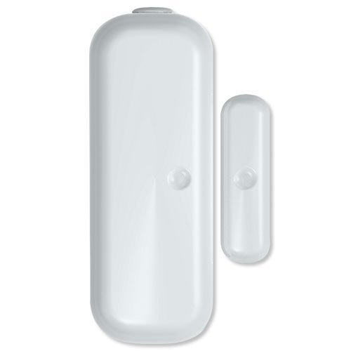
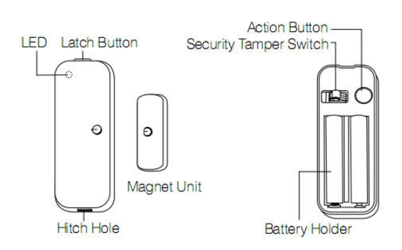

Aeotec Door Window Sensor¶
Aeotec by Aeon Labs ZW120 Door / Window Sensor, Small, White by Aeon Labs¶

Specification¶
- The Aeon Labs D/W Sensor is a battery-powered Z-Wave magnetic door/window sensor with an extremely small form factor. The D/W sensor will send radio signals up to 6 associated Z-Wave devices within its own Z-Wave network when the main unit separates from the smaller unit.
- Bidirectional mounting plate and push button allows for easy end-user installation. The Aeon Labs D/W Sensor also has tamper prevention capabilities and low-battery alerts.
- 1 year battery life 2xAAA battery
- Up to 100 feets/30 metres indoor and 254 feeds/100 metres outdoor
Inclusion/Exclusion to/from a network¶

- Put controller to Inclusion/Exclusion mode
- Press the z-wave button once
- Wait for controller completes inclusion/exclusion process
Wake up information¶
D/W sensor will keep wake up for 8 seconds after it send wake up notification command.
If it receive a command,it will keep wake up for 8 seconds to wait next command.
Press tamper switch 3 times, then D/W sensor will wake 10 minutes.
If configured, d/w sensor will wake 10 minutes too when power on.
- Only 3 ways can abort this status:
- Pressing tamper switch 3 times, sleep right now;
- D/W sensor received “Wake up no more information CC”, sleep right now;
- Received other command, wake 8 seconds to wait next command.
LED indicator¶
- ON: In network
- OFF: Sleeping
- Blink: Out of network
Button actions¶
- Press Action button once:
- Send node info frame without security CC in node info list.
- Put device to Inclusion/Exclusion mode
- Press Action button twice with 1 second:
- Send node info frame with security CC in node info list.
- Put device to Inclusion/Exclusion mode
- Press and hold the Action Button for 3 seconds and then released
Toggle on/off 10 minutes wake-up state
- Press and hold Action bitton for 20 seconds then release:
Reset Door Window Sensor to Factory Default
Configuration description¶
- Parameter 1: To set which value of the Sensor Binary Report will be sent when the door is Opened/Closed.
Paramter: 1 (0x01)
Size: 1 byte
- Value:
1, Value=0, Close=Sensor Binary Report 0xFF,Open=Sensor Binary Report 0x00. 2, Value=1, Close= Sensor Binary Report 0x00, Open=Sensor Binary Report 0xFF.
Default: 1
- Parameter 2: Enable/disable wake-up 10 minutes when re-power on the Sensor.
- Paramter: 2 (0x02)
- Size: 1 byte
- Value: 0=disable, 1=enable
- Default: 1
- Parameter 3: To set which value of the Basic Set will be sent when the door is Opened/Closed.
Paramter: 3 (0x03)
Size: 1 byte
- Value:
1, Value=0, Close= Basic Set 0xFF, Open=Basic Set 0x00. 2, Value=1, Close=Basic Set 0x00, Open= Basic Set 0xFF.
Default: 1
- Parameter 39: Set the low battery value.
- Paramter: 39 (0x27)
- Size: 1 byte
- Value: from 10% to 50%
- Default: 10
- Parameter 111: Set the interval time of battery report.
Paramter: 111 (0x6F)
Size: 4 byte
- Value:
Value = 0: disable battery report for an interval time Value=1 to 0x7FFFFFFF, the interval time of battery report. Note:
1, if the value is less than 10, the time unit is second. If the value is more than 10, the time unit is 4 minutes, which means if the value is more than 10 and less than 240, the interval time is 4 minutes. If the value is more than 240 and less than 480, the interval is 8 minutes. 2, if the current battery report falls below the low battery value (configurable parameter 39), it will send battery report=0xFF.
Default: 0
- Parameter 121: To configure which sensor report will be sent when the Sensor is triggered On/Off.
Paramter: 121 (0x79)
Size: 1 byte
- Value: Bit setting
- Bit 8: Basic set
- Bit 4: Sensor binary report
- Others: reserved
Default: 0x00000100